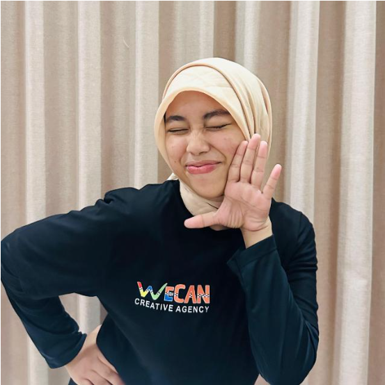

Rahmawati Ibrahim Page

Selamat datang di website pribadi saya! Saya Rahmawati Ibrahim, mahasiswa di Sekolah Tinggi Teknologi Terpadu Nurul Fikri (STT Terpadu Nurul Fikri) yang saat ini sedang menempuh studi di Program Studi Sistem Informasi. Website ini saya buat untuk berbagi perjalanan akademis, pengalaman, serta berbagai pemikiran yang saya temui selama kuliah dan kegiatan lainnya. Saya berharap melalui website ini, Anda dapat mengenal saya lebih dekat dan mungkin mendapatkan inspirasi dari perjalanan saya.
Sebagai mahasiswa Sistem Informasi, saya sangat antusias dalam mendalami bidang studi yang saya pilih. Universitas STT Terpadu Nurul Fikri telah memberikan saya kesempatan untuk berkembang, baik secara akademis maupun dalam kegiatan organisasi dan kepemimpinan. Selain fokus pada perkuliahan. Hobi saya seperti Belajar, main basket, Nonton Anime juga menjadi cara bagi saya untuk menyeimbangkan kehidupan akademis dan pribadi.
Terima kasih telah meluangkan waktu untuk mengunjungi website saya. Di sini, Anda bisa menemukan lebih banyak tentang perjalanan saya sebagai mahasiswa, karya-karya, serta insight yang saya bagikan. Jangan ragu untuk menghubungi saya melalui media sosial atau email yang tertera jika ingin berdiskusi lebih lanjut. Saya sangat terbuka untuk berkolaborasi dan berbagi pengalaman dengan sesama!